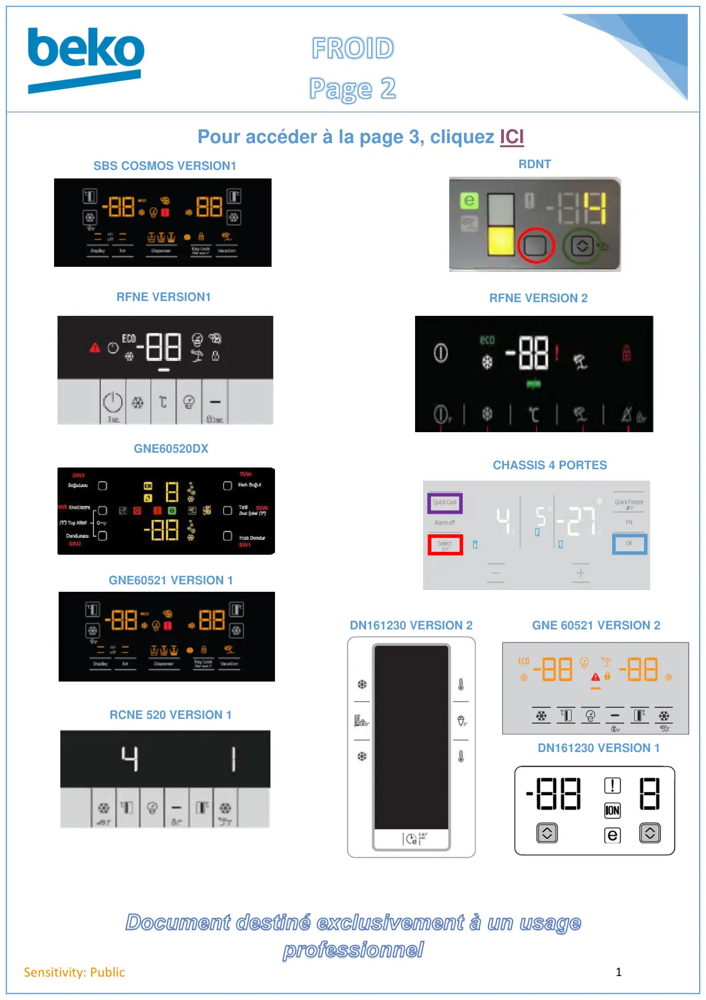

FROID2 page accueil

1Sensitivity: PublicSBS COSMOS VERSION1RFNE VERSION1GNE60520DXGNE60521 VERSION 1RCNE 520 VERSION 1RDNTRFNE VERSION 2GNE 60521 VERSION 2DN161230 VERSION 1DN161230 VERSION 2CHASSIS 4 PORTESPour accéder à la page 3, cliquez ICI
1 / 1Liens de ce document (12)
PDFProgrTest GN162430 SBS Cosmos7 p.PDFProgrTest CGL BEKO RFNE5 p.PDFProgrTest G84600NEL GNE60520DX5 p.PDFProg Test REF gne60522 electonique 13 p.PDFProgrTest K70520NE RCNE520E3125 p.PDFProgrTest D60360N RDNT360I201 p.PDFProgr.Test RFNE FNE V21 p.PDFGne60521 V22 p.PDFProg Test REF DN161230DX Electronique 11 p.PDFProg Test REF DN161230DX Electronique 22 p.PDFProg Test REF G91626NL Forever4D (4 Portes)2 p.≡FROID3 page accueilMenu · 10 liens